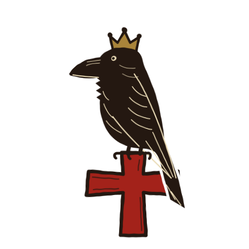

France, 1347. La peste arrive. Les rois meurent. Les héritiers s'entretuent.Dix manches (ou sept) pour régner sur les cendres.
Combien d'adversaires ?
De 2 à 4 joueurs · environ 30 minutes · à jouer sur PC, tablette ou téléphone
Code de la partie
Si tu décoches « Toujours 4 seigneurs » et que vous n'êtes que deux, la couronne d'Angleterre entre dans la partie.
En attente du lancement par l'hôte…